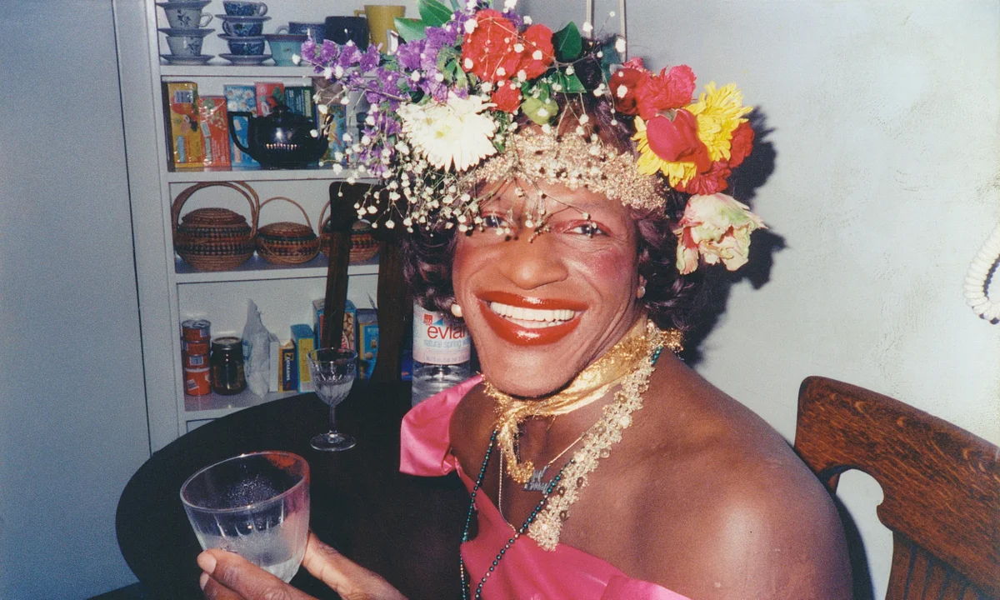
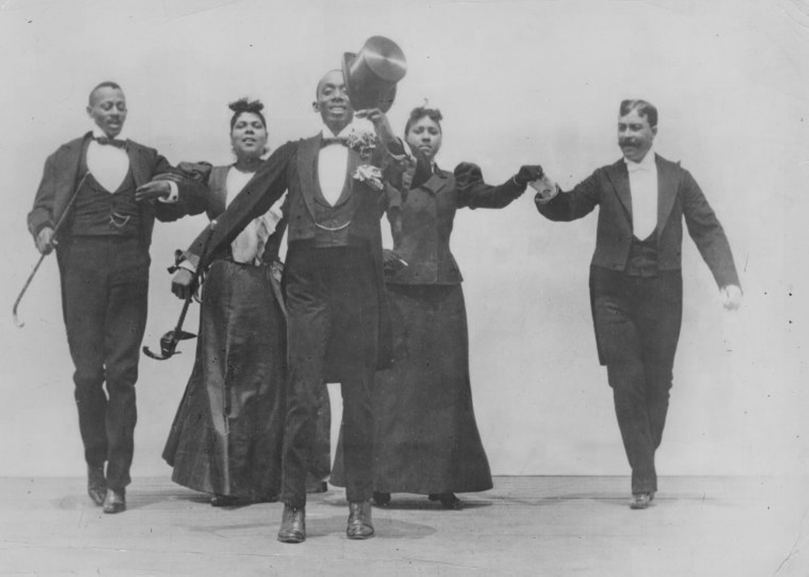
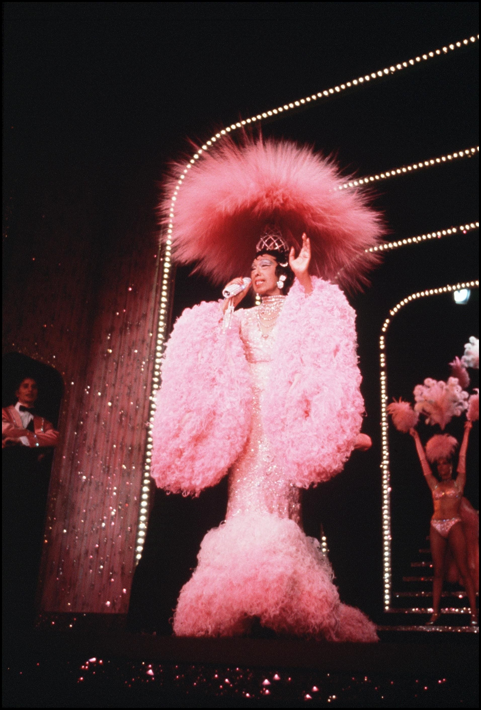

A (Brief) History
First stop: London, England, 1868. You may want to pour yourself a cuppa because things are about to get interesting.
Although camp as a concept didn’t have a clear label until much later, one of the earliest uses of the term can be traced as far back as 1868 when it appeared in a letter written by British theatre performer Fanny Park. Fanny, assigned male at birth, but presenting as female both on stage and off, wrote to her lover, Arthur; ‘I cannot echo your wish that I should live to be a hundred, though I should like to live a green old age – green! Did I say? Oh, ciel! The amount of paint that will be required to hide that very unbecoming tint! My “campish” undertakings are not at present meeting with the success which they deserve.’[3] The quote marks around the word campish indicate an awareness of the colloquial status of the term. Perhaps even more interesting, though, is the style and subject matter here, from the dramatic French exclamation oh, ciel (oh, heavens) to the fanciful thought of how much paint would be needed to cover up their skin if it turned green. This remains clearly recognisable as camp discourse to this very day.
From tea time to further tensions, we’re crossing the pond babes! Next stop: 20th Century 'Murica.
June 28, 1969. Early morning. We find ourselves at the Stonewall Inn, a gay bar located in Greenwich Village, New York City. Several policemen enter, find bootlegged alcohol, and begin arresting and roughing up employees and patrons. Following what was commonly known as the “three-article rule” (though not an official law), a practice aimed at preventing cross-dressing, anyone not wearing at least three articles of gender-appropriate clothing is taken into custody. It’s the latest in a series of police raids and tensions are running high.
These tensions manifest in the fact that the patrons refuse to cooperate. Instead of leaving, they—joined by onlookers—form a crowd outside, waiting for their friends to be released. As the crowd watches the police mistreat patrons, anger rises. They start fighting back, throwing pennies, beer bottles, bricks and even setting trash on fire.
In a failed attempt to control the flames and disperse the crowd, the police grab a fire hose. But ✨surprise✨: the Stonewall doesn’t have running water, so there is no water pressure. The officers call in reinforcements and a line of policemen with nightsticks forms opposite the crowd. Among the rioters are several drag queens and trans women, said to have given the fiercest resistance. They start their own line, breaking into a spontaneous chorus line, complete with synchronized kicks, all while singing a rendition of Ta-Ra-Ra Boom-De-Ay:
‘We are the Stonewall girls,
We wear our hair in curls.
We don’t wear underwear,
We show our pubic hair.’[4]
In this moment, they channel the irony and humour of camp into an act of resistance, a weapon in the fight for liberation. By performing a mockery of traditional and gendered notions of decency, they additionally utilise camp’s playful nature to openly challenge and defy these oppressive norms.
[Fig. 1]
Marsha P. Johnson flaunts one of her signature Flower crowns. Marsha was a key figure in the Stonewall Uprising and the subsequent gay and trans liberation movements.
The Stonewall Riots marked a significant shift in queer visibility. Before Stonewall, in a society where being openly gay was illegal and dangerous, people often had to search discreetly in libraries for information about homosexuality—information that, at the time, was mostly found in scientific literature that labelled it as a mental disorder. Within this context, camp served as a signifying practice—a discreet "code" that allowed gay men to communicate with each other, even while in the presence of potentially hostile individuals. After Stonewall and the subsequent rise of the gay rights movement, the attitude towards camp began to change. LGBTQ+ people, particularly in cities like New York and San Francisco, began to demand visibility, rights, and recognition. However, as the movement progressed, there was a growing desire among some of its members to be seen as "normal" and "respectable" within mainstream society. As a result, many gay men, in particular, no longer wanted to be associated with the flamboyance, excess, effeminacy and thus “outsider” status that characterised camp.
Around the same time, camp found its way to popular culture and into the academic discourse on aesthetics. Sontag’s well-known 1964 Notes on Camp essay, in which she explores camp through 58 notes, signifies an early example of this shift. She describes camp as a sensibility, a mode of aestheticism and an appreciation of exaggeration and artifice, but also states: "To emphasize style is to slight content, or to introduce an attitude which is neutral with respect to content. It goes without saying that the Camp sensibility is disengaged, depoliticized—or at least apolitical."[5]
It seems, however, like we’ve missed an important step in our journey through the history of camp. Time to rewind a little.
Although camp has long been and still often is associated with white homosexual men, this leaves bare an important part of its history. Elements of camp can be traced back to the 19th and 20th centuries, when black people in the United States performed prizewalks or cakewalks at social gatherings on plantations; dance contests in which they would mimic and thereby exaggerate and mock the pompous and stiff movements of white slaveholders. The winner of such a contest was often awarded a cake, hence the name cakewalk.
[Fig. 2]
Dancers performing the Cakewalk. From The New York Public Library
Although Sontag famously described camp as 'disengaged' and 'apolitical', the cakewalks were anything but. Far from being politically neutral, these performances offered a subversive commentary on the racial power structures of the time. African Americans used these performances as a means of resistance—an act of defiance against a society built on oppression. As Paul Baker points out, the cakewalks were about sending a powerful message: “You will never break me.”[6]
This early use of camp directly challenges the notion of camp as disengaged, neutral, or apolitical. Rather, it demonstrates that camp is, by its very nature, a tool for critiquing and disrupting dominant norms and power structures. Camp is not simply an aesthetic of flamboyance, excess, or artifice—it is a radical tool for resistance.
Moreover, these cakewalks laid the foundation for the later Harlem Ballroom scene and voguing[7], where trans women and queer people of colour were at the forefront.
Rewind, fast-forward, and hit play—camp’s evolution through the 80s, 90s, and now!
In the 1980s, a new political wave rejected the notions of 'acceptance' and 'respectability' within mainstream society. Embracing queer theory and camp, activists used these tools to confront inequality within American culture. Amid the AIDS epidemic, a wider spectrum of people (those identifying not only as gay or lesbian, but also bisexual and transgender) began to organise themselves into action groups like ACT UP[8], and terms like queer and LGBT+ were introduced. This also entailed that more people were now able to take part in the camp sensibility. In the face of, or possibly because of, the conservative dominance of the decade, camp became increasingly vital.
[Fig. 3]
SILENCE = DEATH
Poster by the Silence=Death Project, 1986. The pink triangle, a reference to the Nazi persecution of queer people in the 30s and 40s, is inverted, reclaimed and used as a central visual symbol of AIDS activism.
[Fig. 4]
ACT UP protest at the Gay and Lesbian Pride march, New York City, June 1988.
Photo: The New York Historical Society.
The 90s, again, marked an era of an increased academic interest in the topic of camp, which was now expanded to include several subcategories. It gained a more serious status and was theorised, discussed and dissected at length. But, this almost over-analytical and very serious approach towards the topic also meant that it lost some of its fun and playfulness.
As you might have noticed, the closer we get to modern times, the more complex camp seems to become. As queer people have gained more rights, acceptance and visibility (at least in some parts of the world), camp itself has also become more visible and has entered the realm of popular media and advertising. Bruce Labruce argues: "It's a sensibility that has been appropriated by the mainstream, fetishised, commoditised, turned into a commodity fetish, and exploited by a hyper capitalist system... what's lacking is the sophistication, and especially the notion of asterism, something shared by a group of insiders, or rather, outsiders." [9]
In the digital age, camp has furthermore taken a new turn with the influence of social media. Platforms like Instagram and TikTok allow for the rapid sharing of images, with memes and viral content further blurring the line between high culture and low culture and irony and earnestness.
Katrin Horn, in turn, suggests that today, camp is no longer defined by oppression but rather by “distortion.”[10] This distortion happens when commodified images of gay- or queerness are commercialised and absorbed into mainstream culture, stripping them of their original meaning, context and subversive power. This also happens with images of "strong women," which now serve as new forms of control rather than alternatives to outdated and repressive stereotypes.
Divas, Drama and Dykes
Women have long been seen as passive subjects of camp rather than active participants in its creation. This can be partly explained by the fact that women, especially in the first half of the 20th century, were largely excluded from cultural production and had even less power to influence image-making processes—such as film, art, fashion and media—than gay men.[11] Yet, women seem to be central to the classical camp canon, with the figure of the diva playing a pivotal role.
In the mid-20th century, gay men channelled camp through “a select set of fabulous women, a sparkling collection of jewels, each one with a unique cut and colour.”[12] While gay men were heavily involved in various aspects of theatre at the time, the illegality of homosexuality made it difficult for them to land prominent roles. As a result, representations of gay men in mainstream media were scarce, leaving few role models with whom they could identify. One theory explaining the “symbiotic” relationship between gay men and their “fabulous women” is that these divas served as stand-ins, embodying qualities gay men admired. They commanded attention and, not unimportantly, represented drama itself. It was the camp in these women—their theatricality, excess and blend of feminine and masculine traits—that captivated gay men. Edward R. O'Neill adds that this fascination with divas stems from an appreciation for the act of performance itself; the identification with the labour, taste, and stylisation behind the creation of these larger-than-life figures.[13] Moreover, gay men saw in these women not only objects of admiration but also figures of survival—navigating societal pressures and struggles that resonated with some of their own experiences.

[Fig. 10] Marilyn Monroe. 1926 - 1962.
“People think that why I’m late is some kind of arrogance… I think it is the opposite of arrogance… I want to be prepared when I get there to give a good performance to the best of my ability”
These women, however, are more than just figures of admiration or collectables for gay men. By only highlighting them in this way, we risk stripping away some of their agency. From a feminist perspective, they also stand out as figures deserving of a spotlight of their own. So let’s pause for a moment and go for a quick linguistic and historical detour, shall we?
The term diva itself, derived from the Latin word for goddess, was originally used in the 19th century to describe exceptionally talented opera singers—women worshipped as goddesses on the stage.[14] Yet, outside the theatre, there was a growing feeling of discomfort with feminine creativity, agency, and freedom at the time. These early divas were able to transcend the limitations of their gender only through the financial independence afforded by their profession, which offered them a unique position in society.
As the image of the diva evolved, particularly with the rise of the oh-so-fabulous Hollywood diva in the 20th century, the term began to take on a less flattering connotation. As these women became more powerful, famous, and assertive in their efforts to challenge the status quo, they quickly earned reputations for being difficult or troublesome. They had strong opinions and clear ideas about how things should be done. Yet, when they expressed these views, they were labelled as divas or bitches—terms that, when applied to men, would be seen as signs of leadership or strength (sigh). This shift towards the figure of the diva reflected broader cultural anxieties about women asserting themselves in the public eye.
[Fig. 15]
Josephine Baker performing in Paris, 1973.
Some divas used their popularity and unique position to speak out on political and social issues. Take the iconic Josephine Baker, for instance: dancer, singer, and all-around showgirl extraordinaire. Famous for her daring stage outfits—feathers, tulle, gems, and glitter—Baker didn’t just serve looks, she served purpose. During World War II, she used her freedom as a performer to double as a spy for the French, gathering intelligence. After the war, she went on to become a vocal advocate for racial equality, challenging segregation laws in the States and marching for civil rights. Now, that’s what I call camp!
The diva, in her complex mix of power, defiance, and unapologetic femininity, provides a crucial context for understanding the ongoing cultural exchanges and dynamics at play between women and gay men. As we have established, camp aesthetics have traditionally been considered to be the domain of gay men, who, in turn, have borrowed from women’s aesthetics and fashion—think of female impersonation, or the use of slang associated with “women's culture”; like the way gay men sometimes refer to each other using terms like “girl” or “she.” Pamela Robertson suggests that this exchange between gay men and women has long been perceived as being one-sided.[15] Meaning: gay men are seen as appropriating feminine aesthetics and female stars, while women are not considered to draw inspiration from gay male culture. Robertson challenges this view by highlighting how certain female stars, such as Mae West and Madonna, have deliberately taken on aspects of gay male culture.
Madonna, in particular, brought elements of queer subculture, such as ballroom culture and voguing, into the mainstream, with her 1990 hit "Vogue" serving as a prime example. While it helped increase visibility for the underground ballroom scene, it has also faced accusations of cultural appropriation. As a cis white woman, Madonna profited from a subculture created by marginalized communities without fully acknowledging the queer and trans Black and Latinx pioneers behind it. This has been widely critiqued, as it underscores how white celebrities often benefit from these subcultures, while the creators themselves remain largely underpaid, underrepresented, and erased from the narrative.
Looking at today’s icons—think Britney, Beyoncé, Gaga, Charli, Chappell—it’s clear that the relationship between gay men and women is far from one-sided. It’s a dynamic, two-way exchange. This raises important questions about appropriation, co-optation, and identity politics. Robertson argues that camp, as a sensibility embracing cross-sex and cross-gender identities, provides an important space to investigate these intersections, as well as the real differences between feminist and gay theory, and between gay women, heterosexual women, and gay men.[16] Recognising camp furthermore helps us move beyond the simplified divide between “positive” (strong, independent, diverse) and “negative” (weak, stereotypical, reactionary) portrayals of women and sexual minorities. Katrin Horn argues that this divide often ends up reinforcing the marginalisation of lesbians and gay men, even in works that try to challenge it, by appealing to heteronormative views.[17]
Finally, let’s talk camp in cinema. Of all the elements of popular culture, movies probably have the closest link to camp. In the 1990s, New Queer Cinema used camp not only to express queer theory’s deconstructionist ideas but also to visually distinguish itself from mainstream cinema. Although camp’s ironic and aesthetic sensibility is often associated with gay male culture—illustrated by filmmakers like John Waters—it also has a female counterpart: Dyke camp. Australian author Mikaella Clements writes, "Dyke camp is a movement directed not by the tastes of gay men but gay women: a specific brand of humor, manners, and sensibilities guided by lesbian identity."[18] While Dyke camp overlaps with traditional camp in some areas, it diverges in others. Where “traditional” camp revels in the love of artifice and the unnatural, Dyke camp instead focuses on the ultra-natural, nature built up and reclaimed, of clothing that could be extensions of the body, of compulsive yearning, of lesbian gestures or mannerisms multiplied by a thousand. Dyke camp, like its gay male counterpart, embraces iconic figures like Katharine Hepburn (I mean, the pantsuits, need I say more?), but also includes expressions such as Janelle Monae's pink vulva pants, Thelma and Louise soaring through the air in their getaway car, the theme song from The L Word and the hyper-specific costumes featured in the I Hate Gay Halloween trend.
[Fig. 16]
[Fig. 17]
[Fig. 18]
“I hate gay Halloween, what do you mean you’re…” forms the typical caption of the similarly named I Hate Gay Halloween trend, an online phenomenon in which users share their hyper-specific Halloween costumes, often pulled from niche (online) references; memes, films, TV shows, or pop culture. Think of costumes like the tennis ball from the 2024 film Challengers, the bisexual couch from IKEA’s 2021 Pride collection, or the female Oompa Loompa from Glasgow’s Willy's Chocolate Experience.
[Fig. 19]
Thelma & Louise. 1991.
[Fig. 20]
Janelle Monáe and their vulva pants.
Pynk videoclip. 2018.
But I'm a Cheerleader

I'm a homosexual!


Cleaning the pink and blue villa.

Serving looks and legs. The boys and their very “masculine” blue suits.

A campy film that I’m personally quite fond of is the 1999 low-budget film But I’m a Cheerleader, by female director Jamie Babbit. It features a bright colour palette (largely consisting of various shades of pink and blue), plenty of pompoms, vaginal motifs in artwork and decoration, two ex-ex-gays running what is referred to as the ‘underground homo railroad’, and, of course, high-camp diva RuPaul in tight shorts and a blue shirt featuring the words “Straight is Great” in bold sans-serif. Seriously, what’s not to love here?
The film's premise seems rather bleak at first: a girl is sent to conversion therapy camp (yes, that’s right, not only is this film camp, but it also takes place in an actual camp context) by her parents, who accuse her of being a lesbian. Why? Well, she is a vegetarian, has pictures of women around and—heaven forbid—doesn’t like to kiss her boyfriend (in all honesty, who would? The guy practically attacks her with his mouth agape and tongue sticking out, you’d have to see it to truly appreciate how horrifying it is).
As the story unfolds, it quickly becomes clear that the film is more interested in poking fun at the dull, beige and brown world of ‘normal’ or ‘straight’ society—and at the very idea of sending gay teens to conversion therapy, with other gay teens (what could possibly go wrong?!)—than at the lesbian and gay teens who deviate from it.
While the girls learn to scrub floors, do dishes (while wearing pink gloves and using rose-shaped dish brushes—naturally), manicure their nails, change diapers and sit properly (sat up straight, with one leg elegantly crossed over the other, rather than slouched over and with their legs far apart (oh, no! not the manspread!), the boys are taught to fix cars, chop wood, spit and play sports.
The film’s relentless satire mocks the absurdity of rigid gender roles and the illogical and harmful practices of conversion therapy, using a camp lens to expose just how ridiculous the notion of "gender” or “sexuality correction" is. Through the use of colour, exaggerated performances and costuming alongside a highly ironic soundtrack and dialogue it offers a pointed critique of heteronormative and sexist structures. With humour and artifice, the film delivers serious, subversive political commentary.
The film additionally taps into larger questions about the performative nature of femininity, connecting with broader, more theoretical explorations of gender. It critiques how gendered behaviors are not innate, but rather constructed and enforced. In the next chapter, we will delve deeper into how femininity has evolved within feminist discourse, exploring its transformation from a set of patriarchal-imposed expectations to a performative identity that can be redefined and reclaimed.